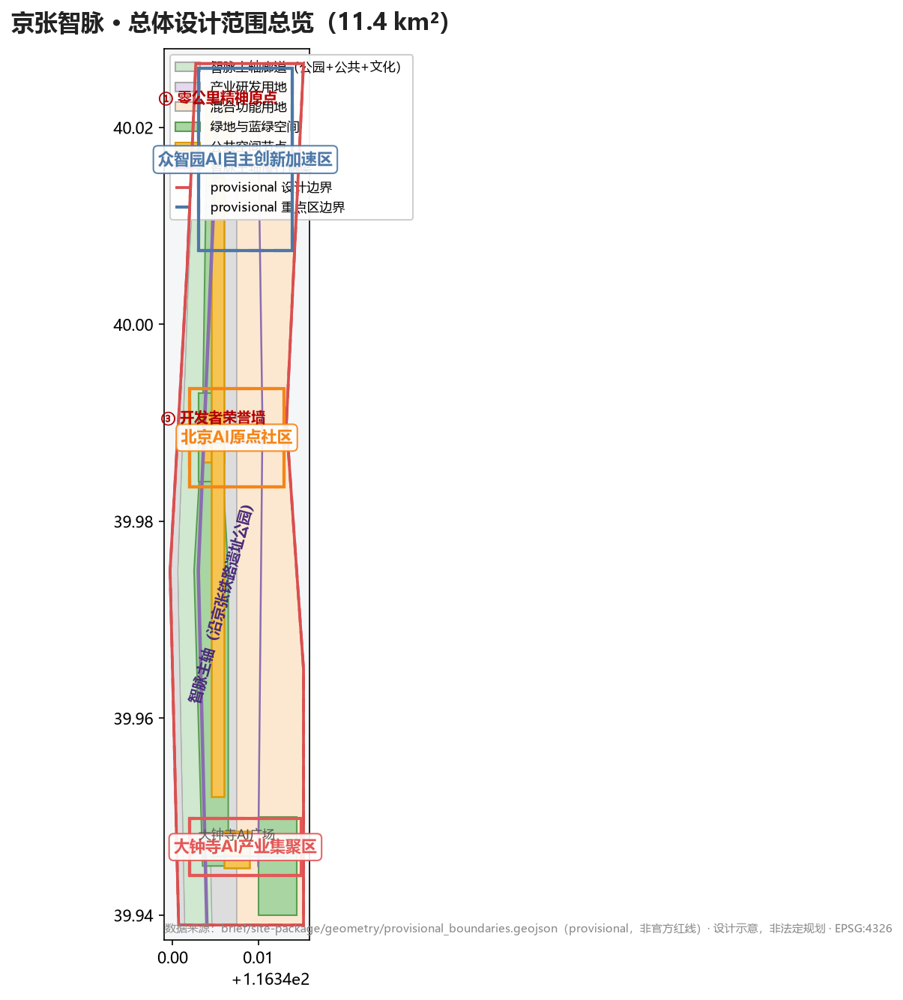
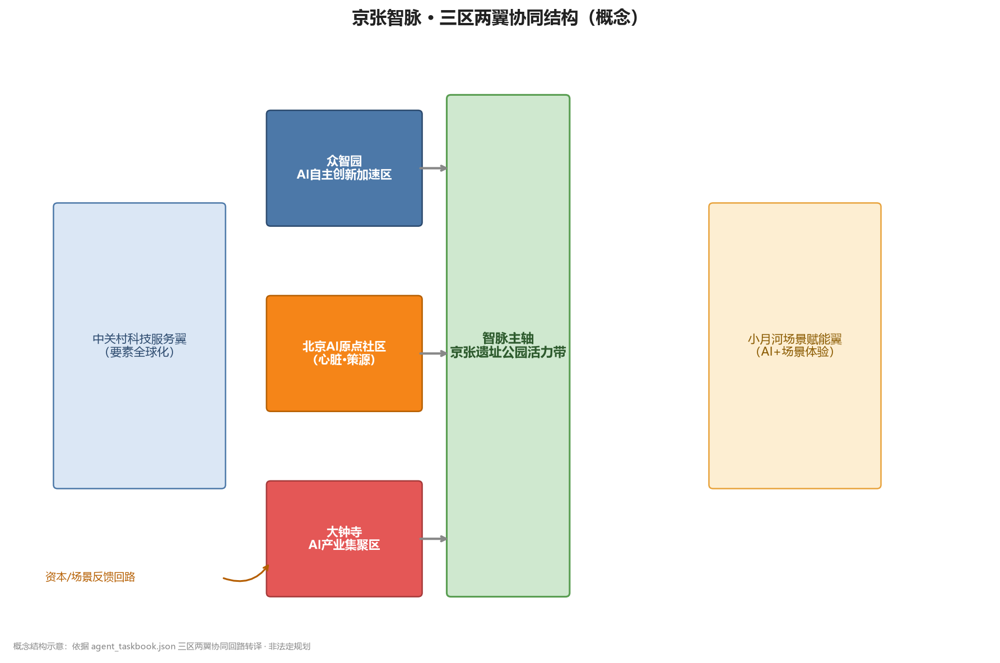
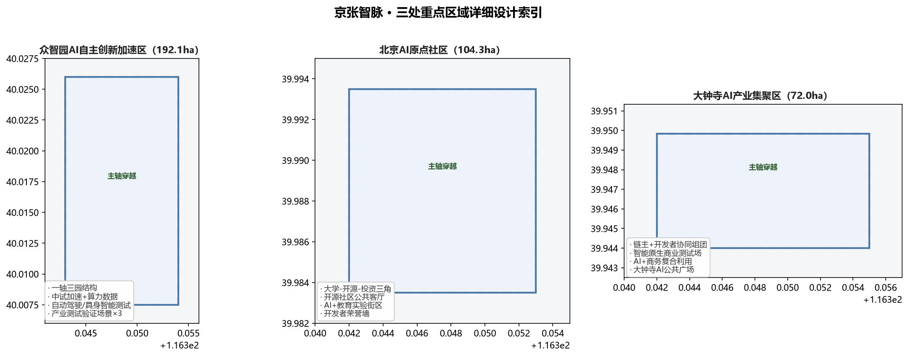
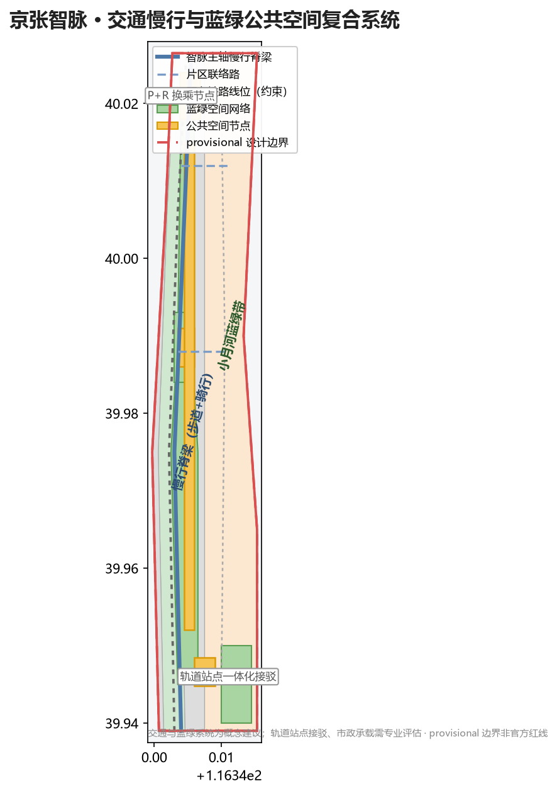

以"从铁轨到算力轨"为核心隐喻，将百年京张铁路的历史创新基因转化为全球AI创新动脉。一脉两翼三节点：AI原点社区（心脏）→ 众智园（引擎）→ 大钟寺（出口），配中关村科技服务翼与小月河场景赋能翼。
总体设计范围约 11.41 km²，以京张铁路遗址公园为智脉主轴，串联众智园、北京AI原点社区、大钟寺三大重点区域。设计边界与重点区均为 provisional 粗略替代边界，非官方红线。

| 层级 | 面积 | 工作目标 | 设计深度 |
|---|---|---|---|
| 统筹研究范围 | 43.6 km² | 产业战略、未来城市形态、AI生态体系 | 战略研究 |
| 总体设计范围 | 11.4 km² | 城市更新框架、功能布局、风貌控制 | 控规深度 |
| 重点区域范围 | 3.68 km² | 三片区详细设计、拆改留、公共空间 | 规划综合实施方案深度 |

| 区域 | 官方面积 | 定位 | 核心策略 |
|---|---|---|---|
| 众智园 AI 自主创新加速区 | 192.1 ha | AI 全栈自主创新 + 治理话语权 | 一轴三园：基础研究 / 中试加速 / 算力数据 |
| 北京 AI 原点社区 | 104.3 ha | 世界级 AI 创新生态策源 | 大学-开源社区-早期投资三角 |
| 大钟寺 AI 产业集聚区 | 72.0 ha | 智能原生新业态出口 | 链主+开发者协同组团 |

按"沿脉集中、两翼展开"组织：智脉主轴廊道（公园+公共+文化）、产业研发用地、混合功能用地。用地多边形覆盖提交边界，无空隙无重叠。
沿智脉主轴构建连续步道+骑行道（绿色慢行脊梁），片区联络路串联三节点，结合轨道站点一体化接驳与 P+R 换乘节点（概念建议，需专业评估）。

京张遗址公园活力带为绿色脊梁，小月河蓝绿带为东翼生态廊道，三节点内部设社区绿心与口袋公园。绿地率 21.5%，公共空间率 10.7%（provisional 复算）。
建筑基底为概念示意（保留/改造/新建逻辑），非实测建筑存量。控规条件（容积率、建筑高度、密度、绿地率、退线）缺失，本方案不主张建筑面积与高度结论。
| 分期 | 重点 | 项目类型 |
|---|---|---|
| 近期（0-3年） | 主轴公共空间贯通、原点社区客厅、大钟寺AI消费测试场 | 公共空间+场景节点 |
| 中期（3-7年） | 众智园中试/算力设施、两翼场景段 | 产业空间+新型基础设施 |
| 远期（7-15年） | 全带产业生态成熟、国际活动常态化 | 生态运营 |
| 来源 ID | 类型 | 用途 |
|---|---|---|
| SITE-PACKAGE | official_public | Project brief, enums, allowed design space, ranges, and schemas. |
| SOURCE-REGISTRY | repository_public_registry | Public/cleared/provisional source usability registry; distinguishes fo |
| PROCESSED-FACT-PACK | repository_processed_reference | Agent-readable navigation layer for scopes, required tasks, source-use |
| BOUNDARY-SOURCE | agent_inferred_from_public_data | Submitted site boundary geometry source (provisional). Feature PROV-SI |
| KEY-AREA-SOURCE | agent_inferred_from_public_data | Three required detailed-design key area boundaries (provisional): PROV |
| OFFICIAL-ANNOUNCEMENT | official_public | Official announcement tasks, scope levels, key areas, language, and de |
| AGENT-TASKBOOK | user_provided_cleared | Agent-facing open-call principles, six required agent tasks, scenario/ |
| PLANNING-LIMITS | official_public | Known official area values and missing regulatory control list (FAR/he |
| VISUAL-STYLE-RECS | official_public | Visual style recommendations for figures, report, and offline visualiz |
| CASE-STUDIES-PUBLIC | public_background | Global AI ecosystem case studies (Silicon Valley, Shenzhen, Station F, |
| ID | 状态 | 说明 |
|---|---|---|
| A-CONTROLS-001 | pending_professional_confirmation | Detailed regulatory controls (FAR, building height, density, green ratio, setback), road r |
| A-BOUNDARY-001 | provisional | Site boundary and key-area polygons are provisional rough boundaries from brief/site-packa |
| A-FIGURES-001 | conceptual | Building footprints are conceptual schematic polygons illustrating design intent (retain/r |
| A-SCENARIOS-001 | conceptual | All AI scenarios, events, operations, and brand elements are conceptual suggestions for pr |
provisional 边界官方多边形发布后需重算面积与指标控规条件缺失容积率/高度/密度/绿地率/退线待官方附件确认